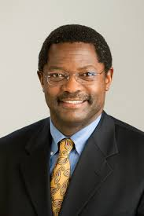
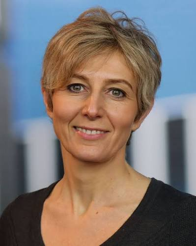
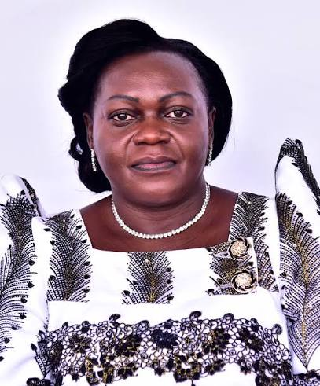

Keynote Speakers

Dr. Samuel Mukasa
Director of Coffee Research, NARO
Dr. Mukasa leads national breeding programs focused on drought-tolerant and disease-resistant Robusta varieties. He has over 18 years of field research experience supporting smallholder farmers across Uganda.

Elena Rossi
Head of Green Coffee Sourcing, Milano Roasters
Elena manages specialty green bean procurement across East Africa for European roasteries. She actively champions direct-trade partnerships and transparent farm-gate pricing.
David Tumusiime
Managing Director, Pearl Roast Uganda
David pioneered automated specialty roasting and export-ready packaging facilities in Kampala. He advises local cooperatives on increasing domestic value addition before export.

Sarah Achieng
Chairperson, Elgon Women Coffee Alliance
Sarah coordinates over 4,500 female Arabica growers on the slopes of Mount Elgon. Her initiatives focus on post-harvest quality control and financial literacy for rural women.
Featured Panelists
| Name | Organisation | Country | Session Title |
|---|---|---|---|
| Brian Okello | AgriTrace Africa | Uganda | EUDR Compliance & Digital Traceability |
| Grace Namukasa | Makerere University | Uganda | Soil Health & Organic Fertiliser Practices |
| Kenji Takahashi | Tokyo Specialty Coffee Imports | Japan | Accessing European & Asian Specialty Markets |
| Peter Nsubuga | Uganda Development Bank | Uganda | Financing & Credit Access for Cooperatives |
Call for Papers
Researchers, agronomists, agribusiness specialists, and policy analysts are invited to submit original research abstracts for presentation at the Uganda International Coffee Expo 2026. Submissions should address sustainable production, climate adaptation, digital traceability, or value-chain financing.
Abstracts must not exceed 300 words and should be submitted in PDF format to papers@coffeeexpo.go.ug alongside a short author biography. Accepted papers will be published in the official MAAIF Expo Proceedings.
| Milestone | Date | Status |
|---|---|---|
| Abstract Submission Deadline | 15 June 2026 | Closed |
| Notification of Acceptance | 15 July 2026 | Completed |
| Full Paper & Slide Deck Submission | 20 August 2026 | Open |